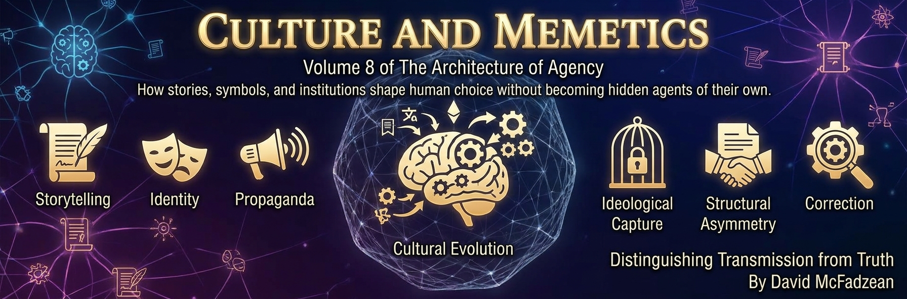

Volume 8 — Culture, Memetics, and Ideology

This volume treats culture the way the earlier volumes treated minds and markets: as a system whose recurring outcomes can be explained by mechanisms. Its central model is selection over patterns. A pattern is a coherent informational or physical configuration re-identifiable at a stated grain and maintained, copied, or causally influential across the comparison being made. A selection account must further specify variants, transmission or retention, differential outcomes, environment, and horizon. People remain the agents: they interpret, choose, imitate, enforce, and revise. Groups and institutions count as agents only where their organization independently meets the book’s agency criteria. Pattern language does not attribute a mind, intention, or moral responsibility to an abstraction.
The argument runs in five parts. Part I builds the theory: humans as story-telling apes whose narrative environments can decouple propagation from accuracy; a toy model separating cultural schemas from populations; the canonical account of pattern identification and selection, with drift, lock, and collapse; and exemplars as one transmission channel, tested against the book’s chosen commitment to reciprocal agency. Part II explores the ecology through controlled metaphors: egregores as distributed feedback rather than group minds, curved landscapes as path dependence rather than general relativity, pathogens as diagnostic models rather than medical labels, Freud as a lineage claim requiring evidence, and the containment of dangerous knowledge.
Part III turns to discursive weapons — techniques that can win a contest without resolving its proposition: bad-faith grammar, elastic labels, shibboleths, captured language, moralized categories, social enforcement, and appeals that recruit through empathy or dread. Part IV examines institutional capture: its criteria, its non-partisan symmetry, its professional manifestations, gated realities, and the way moralized attention can produce patterned blind spots. Part V then applies one controlled procedure to contested cases. It begins with a historical claim that the procedure sustains, before testing disputes about gender language, occupational parity, symbolic restitution, antisemitism, and taboo. In every case, asymmetry is evidence of an omitted variable to investigate — not proof, by itself, of a hidden motive.
A word on method, because the subject demands it. Much of this material is contested and some of it is incendiary, and the temptation on every side is to reach for the tribe’s approved conclusion. The volume refuses that on principle: the same test that convicts one faction’s ritual acquits an honest renaming; the same standard that rejects a spurious grievance affirms a real one; capture is diagnosed on the left and the right by one criterion. The foundations live in the earlier volumes — the epistemology in the second, the minds in the third, the value theory in the fifth, the economics in the sixth, the politics and speech law in the seventh — and this volume cross-links them throughout. What it adds is the layer between the individual mind and the political order: an account of how inherited patterns constrain attention and action, and a discipline for studying those constraints without confusing a useful model with a literal agent.
This volume is in author review. Chapters carry their status openly, and the arguments are held the way the book says they should be held: at the strength the evidence licenses, and no stronger.
Chapters
Part I — Theory and Transmission
- The Story-Telling Ape review
Human cognition readily organizes events into narratives of agents, motives, consequences, and meaning. Stories can carry cooperation, encode norms, and transmit lessons beyond direct experience, making narrative capacity a plausible target or by-product of selection without reconstructing its exact evolutionary history. The same capacity can decouple cultural fitness from accuracy: a story may spread because it resonates, coordinates, authorizes, or consoles even when its factual core is thin. Arthur, Socrates, and Jesus illustrate different gaps between defensible history and the legends built around it, but the size of that gap does not by itself decide a tradition's value. Culture adds a selection layer in which fit to the mind can compete with fit to the world, while people remain the agents who interpret, transmit, revise, and act. The recurring danger is not a cultural creature choosing through humanity, but human systems repeatedly rewarding resonant stories over accurate accounts.
- Schemas and Groups review
Culture can name two different objects: a Cultural Schema and the population modeled as instantiating it. A Cultural Schema is an analyst-specified collection of beliefs, values, preferences, practices, or norms; it is not a literal group mind, and people instantiate its contents partially and unevenly. The induced Cultural Group consists of agents whose belief systems satisfy the chosen membership criteria, so adding mandatory criteria generally narrows the modeled group while relaxing them broadens it. Nested schemas form a lattice that can represent overlap, divergence, convergence, and possible shared commitments without supplying their historical causes. This set-theoretic picture is deliberately static: copying, teaching, enforcement, revision, retention, and institutional change require separate mechanisms. Splitting schema, population, and institution blocks equivocation, preserves individual agency, and turns cultural membership into an explicit model whose criteria and omissions can be inspected.
- Patterns as Players review
Cultural persistence is often easier to explain by tracking patterns than by searching for a single chooser behind a system. A pattern is an analyst-specified type whose tokens recur through behavior, artifacts, rules, incentives, or institutions; people remain the choosing and responsible agents who instantiate, reward, revise, or resist it. Patterns persist when environments favor reliable replication, coordinated action, institutional support, or local incentives, and they disappear when those supports fail. Pattern drift gradually moves a pattern away from its original purpose, pattern lock makes escape costlier than continued participation, and pattern collapse occurs when coherence or support can no longer be maintained. “Attractor” language is warranted only when a state space, dynamics, and basin are supplied; otherwise it marks an analogy to recurrent pull. Pattern-level explanation and human agency are complements: one identifies recurring causal organization, while the other locates interpretation, intervention, and responsibility.
- Exemplars and the Axionic Criterion review
Human competence travels through exemplars as well as rules. An exemplar is a lived reference pattern from which agents absorb posture, timing, judgment, and value under conditions too varied for exhaustive instruction; the exemplar influences through attraction and imitation rather than command. Such patterns can be distributed across many carriers without becoming a collective mind, and lineages can preserve recognizable form while every individual instance changes. The Axionic Criterion asks three questions: does the pattern support coherent choice under constraint, does it reduce reliance on coercive stabilization, and does it scale across agents without collapsing autonomy? These tests do not make cultural fitness equivalent to moral worth, since a coercive or deceptive pattern may spread efficiently. Reciprocal agency preservation is an explicit normative commitment rather than a cosmic value derived from the descriptive fact that agency makes valuing possible. Exemplars merit propagation under that commitment when continued instantiation preserves the choosing agents who carry them.
Part II — Memetic Ecology
- The Egregoric Singularity review
Genetic inheritance was joined by a faster channel when human beings became able to preserve patterns in language, ritual, artifact, and institution. An egregore is a model of the distributed feedback through which a cultural pattern persists across changing human carriers; it is not a conscious organism, a hidden chooser, or a second mind above the people involved. Repetition, imitation, enforcement, material infrastructure, and coordinated expectation can stabilize a flag, faith, corporation, or custom until it shapes the environments in which later choices are made. Critical mass matters because enough mutually reinforcing carriers can make a pattern durable even as particular participants leave. This “egregoric singularity” therefore names a transition in cultural storage and feedback, not the birth of literal supernatural agents. The model is useful only while authorship and responsibility remain with the people and institutions whose actions sustain, modify, or dismantle the loop.
- The Geometry of Culture review
A culture can be represented as a manifold of available interpretations, actions, identities, and social rewards, curved by inherited norms and reinforced expectations. The geometry is not a force field or a mind: it is a model of how some moves become nearby and natural while others become costly, strange, or difficult to perceive. A self-curved manifold emerges when participants reproduce the very conditions that shape their future choices, allowing local conformity to sustain a larger pattern without central direction. The same geometry can organize one mind through internalized habits or many minds through institutions and mutual prediction, but similarity of structure does not erase the difference between persons and populations. Exit can expose the contingency of a local world, yet escape from one culture does not produce a view from nowhere or make all interpretations equally sound. Agency consists partly in learning the curvature, testing its constraints, and finding or creating routes the inherited map made hard to see.
- Memetic Pathogens review
Some cultural programs spread under noble ideals while insulating their failures from correction. Four recurring risks are utopian anthropology, bureaucratic capture, perverse incentives, and outcome inversion; they are hypotheses to test, not defects automatically present in every ambitious movement. A memetic pathogen is diagnosed through mechanisms of retention, enforcement, and damage rather than by treating an idea as a literal parasite with intentions. Relentless empiricism is the first antidote: specify baselines, causal evidence, tradeoffs, and conditions under which a program would be revised or stopped. Destructor memes occupy the opposite pole by romanticizing despair, destruction, or extinction, but despair itself is an experience deserving support rather than a moral infection. Phosphorism supplies a proposed counterorientation toward life, intelligence, complexity, flourishing, authenticity, creation, and sovereign agency. Both errors yield to the same discipline: fidelity to what happens and to what is worth preserving.
- Echoes of Freud review
Freudian theory lost much of its scientific standing while Freudian vocabulary and interpretive habits remained culturally powerful. Terms such as repression, projection, rationalization, denial, fixation, and narcissism compress causal accusations about motives that speakers may not be able to verify. Their persistence reflects several routes: direct Freudian coinage, concepts from the wider Freudian ecosystem, older words rewired by psychoanalytic usage, and folk diagnostics that reproduce the same style of explanation. This inheritance encourages a model of agents as internally fragmented, opaque to themselves, and subordinate to interpreters who claim deeper access to their motives. Self-report should not be treated as infallible, but neither should suspicion become the default proof that an agent's stated reasons are false. Agency must instead be reconstructed through evidence about architecture, authorship, and control, while psychoanalytic interpretations remain hypotheses rather than warrants for authority over another person's mind.
- Dangerous Knowledge review
An infohazard is information that can cause harm through disclosure even when it is true or plausible. Population differences become especially dangerous when intelligence or human worth is forced onto a single ladder, because variation adapted to different environments is then misread as a universal hierarchy. Containment preserves inquiry while disarming the interpretation: keep the evidence, identify the model that makes it toxic, and replace that model where a better one fits. Suppression is a poor default because it drives claims into insulated communities, rewards taboo-breaking performance, and leaves errors uncorrected. Contrarian carriers range from taboo-flipping through provocation-laundering and cynical nihilism to irony protected by deniability, with different capacities to clarify or inflame. The hinge is the interaction among facts, frames, and carriers: the same information can be handled responsibly or converted into a weapon without changing its propositional content.
Part III — Discursive Weapons
- The Grammar of Bad Faith review
Bad-faith discourse obstructs inquiry through seven recurring tactics: motivated misinterpretation, double standards, strategic outrage, goalpost shifting, rhetorical bait-and-switch, feigned curiosity, and personal attacks and deflection. The common effect is to make a claim costly to state, impossible to satisfy, or easy to condemn without answering it. A counter-protocol restores inspectable propositions by fixing definitions, asking what evidence would change the conclusion, applying standards symmetrically, and returning attacks on motives to the argument itself. Poll wording can reproduce the same corruption at scale by embedding ambiguity, necessity, group identification, or a moral premise in the instrument before anyone answers. Such instruments may manufacture apparent beliefs rather than measure stable ones. “Violence” requires particular care because physical force, protected expression, coercive threats, and operational participation in harm are not interchangeable. The defense is grammatical precision: identify the tactic, expose the hidden premise, and insist that the same words and standards govern every side.
- Weaponized Labels review
A weaponized label replaces engagement with reclassification. Its motte is a narrow, defensible meaning; its bailey is the expansive accusation used in practice; rapid movement between them lets a speaker attack broadly while defending modestly. The oscillation can shield people from genuine prejudice, but it can also protect doctrines from criticism and turn reputational risk into a substitute for rebuttal. Labels may then become shibboleths or loyalty badges whose use signals membership and detects defection, even when nobody centrally designed that role. Incentive environments reward such vocabulary because reputational attack is cheaper than argument, while repetition strengthens the boundary it marks. The mechanism is nonpartisan and does not require a conspiracy or a literal pattern-agent. Definitional hygiene begins by locating the motte and bailey, paraphrasing the term plainly, preserving any real grievance that survives translation, and discarding the authentication layer that does not.
- The Capture of Words and Time review
Rhetoric can capture vocabulary, imagined history, and statistics by moving an argument onto territory the listener cannot inspect. A hijacked label carries a verdict through inherited connotation even after its operative meaning changes. “The right side of history” invokes a tribunal that does not exist and assumes an inherent moral trajectory, a stable and knowable direction, linear moral advance, and the automatic correctness of future consensus. Captured numbers retain valid arithmetic while attaching it to a comparison that does not measure the claimed moral object. These devices differ in surface form but share one move: the crucial inferential step occurs where the audience cannot follow or challenge it. The remedy is to return each claim to present evidence, precise definitions, explicit baselines, and symmetric tests. Words, predictions, and sums can inform judgment only when their relation to the conclusion remains visible.
- The Wound and the Weapon review
Suffering can be both a wound that deserves recognition and a source of leverage in contexts where the wound does not settle the disputed question. Victimhood becomes a currency when testimony, status, or vulnerability purchases procedural authority, insulation from criticism, or jurisdiction over others. The Sowell Test makes the group-level question empirical: does victimhood, held as a group's organizing narrative, purchase what it promises? Adversity does not erase agency, and culture can mediate long-term outcomes, but neither claim makes internal response the sole cause or severity irrelevant. The Infantilization Reflex withdraws agency in the name of protection by treating capable adults as too fragile for ordinary responsibility or disagreement. One currency supports three possible frauds: a personal wound can seize a stage, a group grievance can sustain incentives that worsen outcomes, and vulnerability can be imposed by third parties who profit from speaking for others. Discernment must honor real injury without treating injury as automatic authority.
- The Corruption of Categories review
Categories fail when pressures unrelated to description bend the language used to track reality. Platform cant replaces ordinary words with euphemisms because opaque ranking and monetization systems punish uncertain lexical triggers, while the distinction between use and mention disappears inside a foggy penalty function. The resulting vocabulary leaks beyond the platform as speakers internalize rules they cannot inspect. A second failure occurs when categories lose their anchors and are asked to serve affirmation or identity rather than discriminate among the phenomena for which they were built. Neither case proves that old categories are perfect or revision is illegitimate. Revision is justified when evidence, prediction, or a clearer purpose supports it; corruption occurs when an external pressure changes the category while evading argument about its descriptive function. The repair is to identify the anchor, state the intended use, and make the costs of misclassification visible.
- Enforcement and Erasure review
Cancellation has three distinct tiers. Tier 1 is pure disassociation, in which individuals or organizations withdraw their own support; Tier 2 is coordinated disassociation through petitions, boycotts, or denunciation campaigns; Tier 3 is suppression by proxy, which pressures third parties under threat to sever relationships they would otherwise keep. Tier 2 remains persuasion until it threatens bystanders, while Tier 3 attacks listeners' and associates' choices rather than merely exercising the canceller's own. Walking away can still impose a material setback, but that descriptive fact does not decide wrongfulness or make ordinary disassociation coercion. Erasure goes further by attacking the record that a person, event, or contested question ever existed. Ordinary forgetting, selective omission, suppression, and totalitarian memory-holing must not be collapsed into one offense. A free culture depends on durable records and open questions so excluded claims can later be recovered and examined.
- Exploiting the Best in Us review
Moral virtues become attack surfaces when empathy, hope, or dread substitutes for analysis of what institutions do under power. The empathy exploit binds care for suffering to a program whose incentives, coercive structure, or failure modes remain unexamined. Its mirror uses catastrophe through moralization, urgency, institutional delegitimization, and lone-wolf heroization, routing fear around procedures that could test or constrain action. Neither mechanism requires insincere recruits; both work especially well on people whose concern is genuine. The answer is not colder character but empathy joined to institutional literacy. Four questions supply the discipline: by what mechanism, who is coerced, what happens when the structure is captured, and what stops the plan when it is wrong? Moral emotion remains indispensable, but it cannot by itself establish scale, effectiveness, legitimacy, or safeguards.
Part IV — Institutional Capture
- Anatomy of Capture review
Capture is a stronger diagnosis than ordinary institutional disagreement. It appears when criticism of a core commitment is predictably penalized regardless of evidence, adverse findings are filtered asymmetrically, dissent receives professional rather than argumentative answers, and credible correction or appeal is absent. Four components form the kit: the law that a system forbidding discussion of its own failure has already failed; the engine of preference falsification, gatekeeping minorities, and publicly compliant majorities; the vacuum left by a relativized mind craving certainty; and the coping function through which ideology maintains self-esteem after its conclusions weaken. None of these components alone establishes capture. Their interaction can turn scholarship into a cargo cult whose rituals remain while error correction disappears. Diagnosis therefore requires observable selection, enforcement, asymmetry, and blocked correction rather than speculation about a collective motive.
- The Symmetry of Capture review
Capture is structural rather than partisan when opposing movements reproduce the same six moves under different slogans: narrative over facts or reason, omnipresent oppression or grievance culture, identity epistemology or identity politics, enforced conformity or speech policing, a rewritten past, and dogmatic anti-liberalism or anti-liberal rhetoric. The mirrored form called the Woke Right, coined by James Lindsay and popularized by Konstantin Kisin, substitutes its own tribe, enemies, and sacred history while preserving the machinery underneath. Symmetry is evidence of a shared mechanism, not proof that every case is morally identical or every accusation sound. The equality trap requires the same discipline: unequal outcomes do not by themselves establish systemic injustice, while equal rights do not prove every disparity arose under fair conditions. Causal inquiry must test coercion, exclusion, preference, ability, circumstance, and rival mechanisms. A nonpartisan standard must correct allies as readily as opponents or become another tribal weapon.
- The Capture of the Professions review
A profession earns authority by being trusted to tell inconvenient truths, and capture spends that trust for factional ends. Five symptoms mark the risk: selective redefinition of terms, policy preceding evidence, asymmetric application of principles, a chilling effect on inquiry, and institutional gatekeeping outside core competence. Change alone is not evidence of capture; diagnostic categories, standards, and curricula can properly change with evidence, practice, law, and social values. Psychiatry, the academy, and engineering become warning cases when political pressure displaces transparent error correction or when cultural respect is confused with epistemic relativism. Responsible practice can incorporate history, local knowledge, consultation, and consent while preserving empirical standards and technical reliability. Capture from within also meets obsolescence from without as ideological signaling weakens credentials just when inexpensive machine intelligence reduces their scarcity. The proper test is observable asymmetry and blocked correction, not a presumed hidden motive shared across a profession.
- Gated Realities review
A gated reality is an information environment selected or curated to reduce unwanted contact until absence feels like safety. One timeline cannot establish a platform-wide pattern; the claim requires repeated samples, comparison feeds, defined time windows, and attention to exposure, ranking, self-selection, and moderation. Unlike cancellation imposed on another person, a gated reality can be built inwardly and defended by those it encloses, making insulation feel like integrity. The resulting epistemic immune disorder treats contrary information as contamination rather than possible correction. Digital culture can then become an archipelago of morally comfortable islands whose inhabitants encounter other views chiefly as caricatures. Sorting and filtering are not inherently pathological, and nobody owes attention to every provocation. A filter under individual control is a dial rather than a gate; plural clients, common substrates, revisable settings, and minds able to survive disagreement can keep the channels crossable.
- The Forbidden Pattern review
The British grooming-gang scandal began with crimes committed by men who raped, drugged, trafficked, and terrorized children; offender responsibility is primary and must not be diluted into collective guilt. Information about repeated offenders and local networks was available, yet institutions often failed to integrate it because noticing ethnicity carried political and reputational costs. Euphemism obscured coercion, exploitation, and organized predation, while agencies served a second client: the institution's image of itself. A starved institution fails irregularly; a corrupted one fails in a pattern, selectively suppressing facts that threaten a protected story. Precision cuts both ways: naming a specific network can protect victims and direct accountability, while indicting an ethnicity or religion invents guilt beyond the evidence. Anti-racism fails when concern about stigma eclipses equal protection for vulnerable girls. Attention is moral infrastructure because values determine which facts institutions notice, record, connect, and act upon.
Part V — Controlled Applications
- When the Claim Is True review
Honest adjudication must be able to sustain a claim when the evidence supports it and narrow the claim where causation remains uncertain. Rosalind Franklin's experimental and interpretive work materially enabled and checked the double-helix model, while the public account long reduced her contribution. Watson and Crick did not obtain the structure by stealing a decisive Photograph 51, but they did use results generated at King's College and initially acknowledged that dependence inadequately. Franklin was an equal contributor, not a technician who failed to understand her data. Sexism in her institution and Watson's later stereotypes are relevant evidence, yet the record does not isolate gender as the sole cause of the original credit allocation. The calibrated verdict therefore separates well-supported under-credit from a broader causal claim involving hierarchy, disciplinary roles, scientific norms, personality conflict, and model priority. Fair judgment preserves both findings instead of forcing the record into accusation or acquittal.
- Two Ontologies of Gender review
“Gender is performative” carries two incompatible meanings. Performance can mean a staged display that disguises an underlying reality, or a performative act whose social uptake helps constitute the status it names. The resulting dispute crosses two ontological layers: sex is empirically real, while gender is socially real. Sex is a descriptive category anchored in biological organization and answerable to correspondence; gender is a constitutive category sustained through social recognition and answerable to uptake. Forcing either category to satisfy the other's truth conditions creates mirror-image errors. This distinction does not decide which layer should govern sports, prisons, medicine, dating, census categories, or every boundary case. It is a proposed frame for turning mutual denial into a tractable dispute over jurisdiction, allowing both realities to be acknowledged without pretending that ontology alone settles policy.
- Parity Where It Pays review
Formal equality does not mechanically produce occupational parity, and unequal outcomes do not establish either injustice or free choice. The reported gender-equality paradox is an association rather than a natural experiment, since wealth, education, payoffs, migration, field definitions, culture, and measurement vary together. Its neglected mirror is the concentration of men in dangerous and physically punishing work: parity campaigns tend to focus where status and pay are attractive rather than where injury and death are concentrated. Supply chains also hide burdens performed far from the consumers who benefit from them. Friction can reflect preference, biology, path dependence, caregiving, exclusion, incentives, or several mechanisms together; disparity alone cannot identify which. Remedies therefore require evidence of a barrier, proportional means, explicit costs, and a stopping condition. Symmetry means investigating both intervention and inertia while accepting that genuinely open choices may still yield uneven distributions.
- The Rituals of Absolution review
A ritual of absolution is a symbolic act that discharges the feeling of moral debt while leaving the asset or mechanism at issue untouched. A land acknowledgment can invoke restitution while preserving title and budget; a targeted gate can be called repair without demonstrating that its categorical remedy fits individual evidence; compressed history can replace a complex ledger with an inherited moral role. The test is not symbolic versus material. A legitimate symbolic reform makes a claim it can keep, while a ritual borrows the moral weight of a remedy it refuses to deliver. Replacing “Middle East” with “West Asia” can pass because the change is justified by geographic accuracy and accomplishes exactly what it promises. Material remedies face additional requirements of evidence, proportionality, individual burden, alternatives, and review. Words become absolution when they stand forever in place of payment rather than naming an achievable correction.
- The Oldest Attractor review
Antisemitism recurs across societies under mutually contradictory rationalizations, suggesting that the reasons offered after the fact are not its stable cause. David Deutsch calls this recurrence the Pattern; a proposed structural account treats it as a perverse Schelling point for coordinating blame under stress. The attractor language refers to an expectation-driven equilibrium, not a conscious chooser or a hidden Jewish network. Refuting each blood libel remains necessary and protects people from particular lies, but belief correction alone may leave the coordination structure intact as a new accusation replaces the old one. Displacement toward actual, identifiable authors of corruption or mismanagement is a less certain proposal, not a solved program. The framing supplies a correctness condition: an intervention that leaves the focal coordination mechanism untouched has not reached the root. This false positive mirrors the forbidden pattern's false negative, revealing two failures in the moral infrastructure that governs collective attention.
- The Taboo Test review
The Taboo Test begins when apparently similar cases receive different moral treatment. European discomfort with air conditioning beside routine acceptance of winter heating provides a small case: the asymmetry may reflect climate, architecture, energy systems, history, symbolism, or a residual norm rather than one hidden motive. The Heat-Pump Test holds the underlying mechanism as fixed as possible by comparing heating and cooling through the same reversible technology. The remaining differences become evidence to investigate, not proof of hypocrisy. The method joins two disciplines: attention to awkward facts without expanding them into collective indictments, and controlled comparison that fixes the stated variable, enumerates uncontrolled differences, and tests candidate explanations. An asymmetry can reveal either an inconsistent taboo or a morally relevant distinction omitted by the first framing. The instrument cuts through inherited symbolism, but its success does not establish that every symbol should be dissolved.